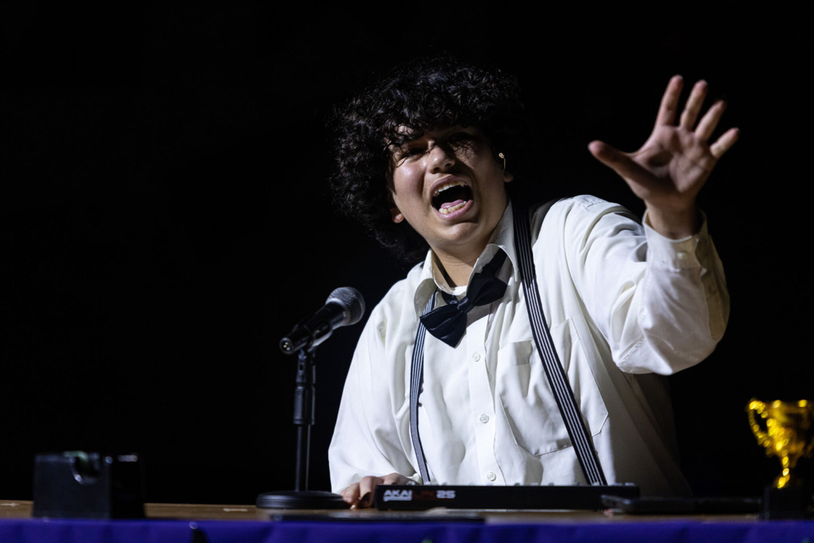

My name is Bilal Darwish, a soon-to-be 11th grade student at Raha International School. I enjoy theatre (both onstage and backstage) and programming. Recently, I have been learning Python and have experience with HTML, CSS, JavaScript, Java, and C#. I enjoy creating a vast variety of tools, ranging from practical tools to creative projects.
Created a simple 2D platformer using Unity and C#. This project was part of the MYP Personal Project with the goal of learning C# and applying it to game development. Designed and programmed core mechanics such as movement, jumping, and level design. Also learned creative skills such as pixel art.
A tool to help actors memorize lines and go "off book."